| 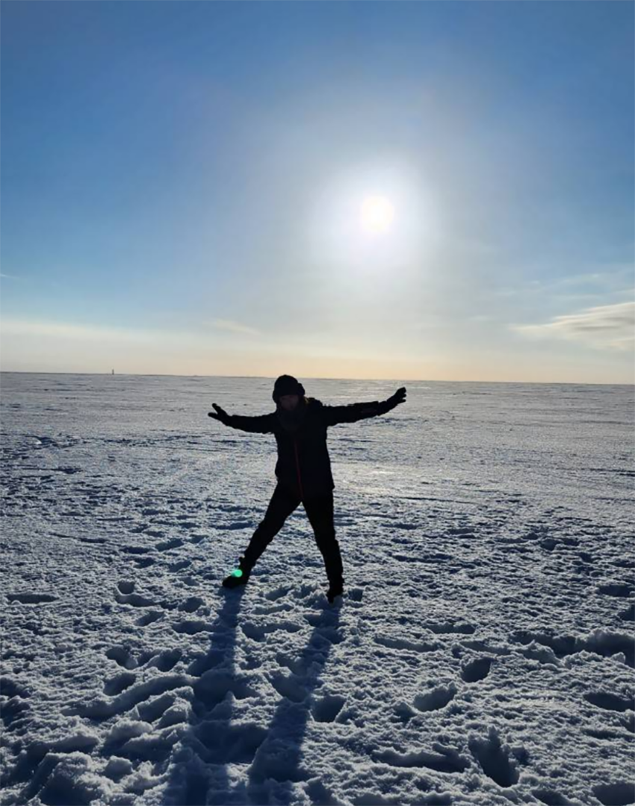 |
很多人夢想可以看到一次極光Aurora一生幸福，我沒有將看到極光設為人生夢想，但剛好旅遊展看到北歐的玩樂行程很有興趣，如果可以看到極光也很不錯。
遙遠的北歐經過土耳其轉機到瑞典，搭了十幾個小時的飛機，到了目的地興奮讓人忘了疲勞與時差，除了沉重的行囊影響了想輕快的腳步，不然會走在旅遊團的隊伍前面，期待感受戶外當地的溫度、北歐景色還有踩在雪上的感覺，可惜瑞典路上並沒有積雪，但可以感受到空氣的冰冷感。
歐洲建築真的好美很精緻，道路也沒有擁擠感，更意外的是北歐的遊客很少。晚上又再搭飛機到芬蘭，這次出機場是滿滿雪地，開心地打開鞋底的冰爪踏上去，感覺就像踩在剛被海水浸透的沙灘，還要拖行李其實很不好走，行李也不好拖動。
行程有破冰船，上船有導覽介紹船艙設備及船的行駛運作，透過前後來回行進把前方的冰壓碎，在船上可以感受到船前進又後退，但最特別的是穿上龍蝦裝在冰水上仰漂，完全不會感覺到冰冷而且非常防水，除非從臉包起來的縫隙漏進去。
| 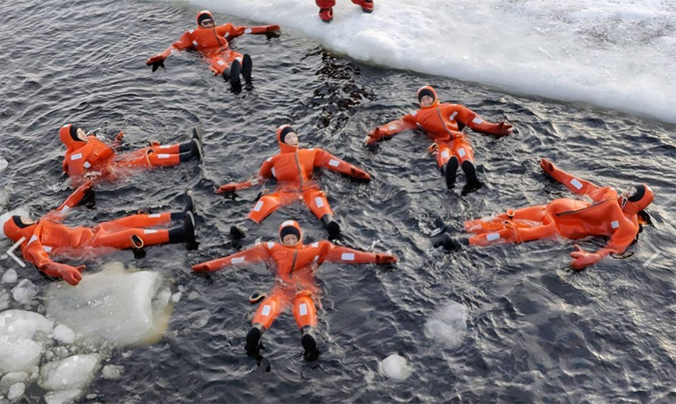 |
哈士奇拉雪橇，一車雪橇四人前後坐一排，由12隻哈士奇拉著跑，同時雪橇後會站一位，指揮哈士奇加快、減慢或前進，過程中一度以為要翻車，而且哈士奇真的跑起來非常快，蠻好玩的。
| 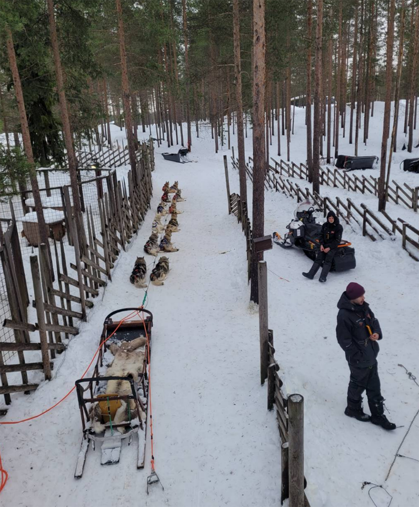 |
| 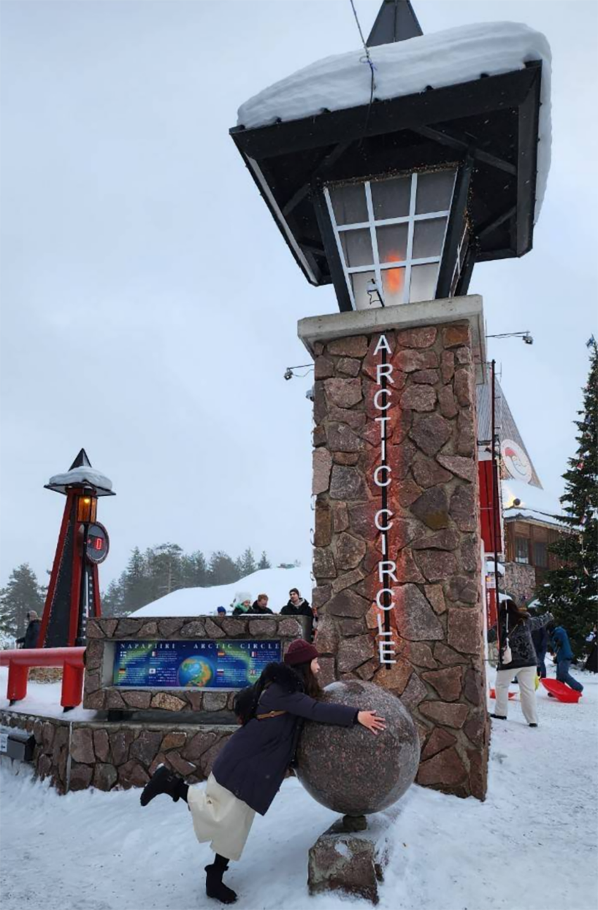 |
聖誕老人村，像是一個村落的地方，同時也在北緯線的交界處，另外這裡是有聖誕老人的，但拍合照需要30歐元。
| 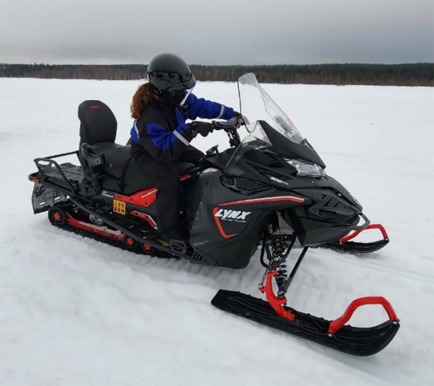 |
雪上摩托車，會穿上整身的防寒衣、手套、鞋子還有頭套，沒穿大概五分鐘就凍得受不了，這套可以在雪地騎一個小時都不覺得冷。雪上摩托車騎起來相較沙灘車好騎多了，但相比一般摩托車還是吃力點，跟著前車在結冰的河面上前進，一路廣闊雪白一片，騎起來很舒服、很愜意。
| 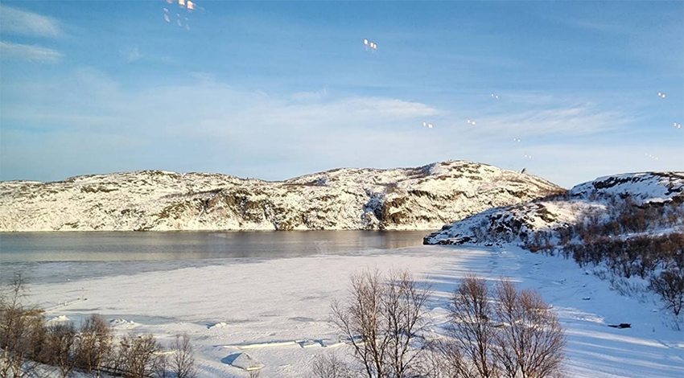 |
往挪威的路上，沿路是雪山還有沒結冰的海，非常壯麗。
| 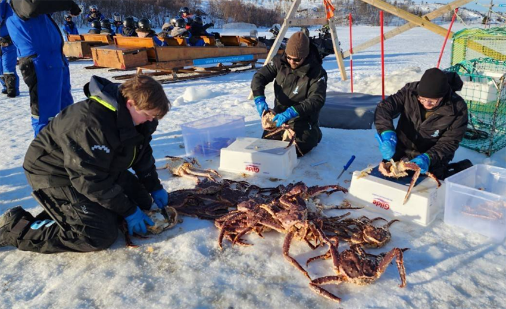 |
挪威的行程是看捕撈大閘蟹，真的非常大隻，除了看之外還可以到餐廳吃大閘蟹吃到飽，雖然是吃到飽，但實際上吃三隻腳就差不多飽了。
| 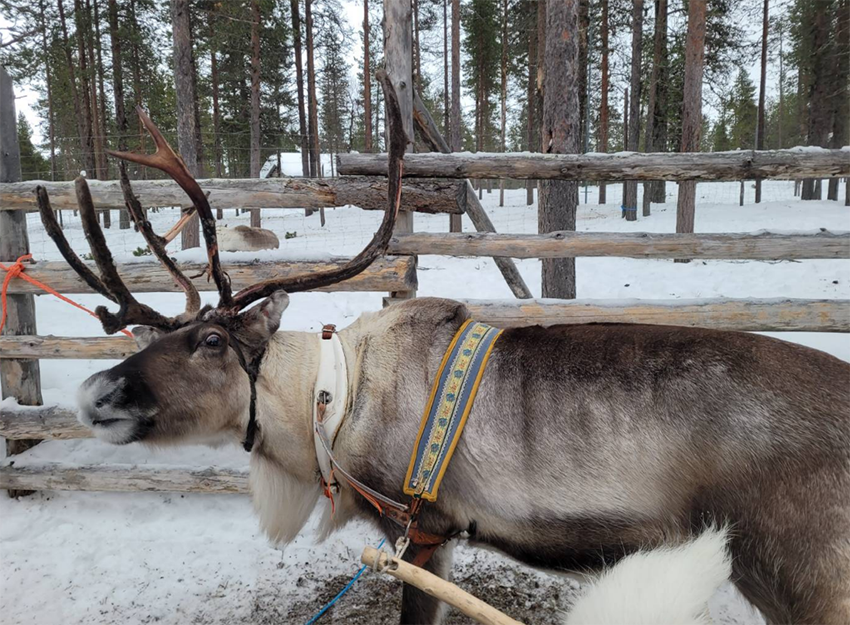 |
馴鹿拉雪橇，超級夢幻場景，這次是兩人一車由一隻馴鹿拉動，可以感受到馴鹿的吃力，在想聖誕老公公要四隻馴鹿拉也很合理。速度相當的緩慢，慢到好像可以睡個覺。
| 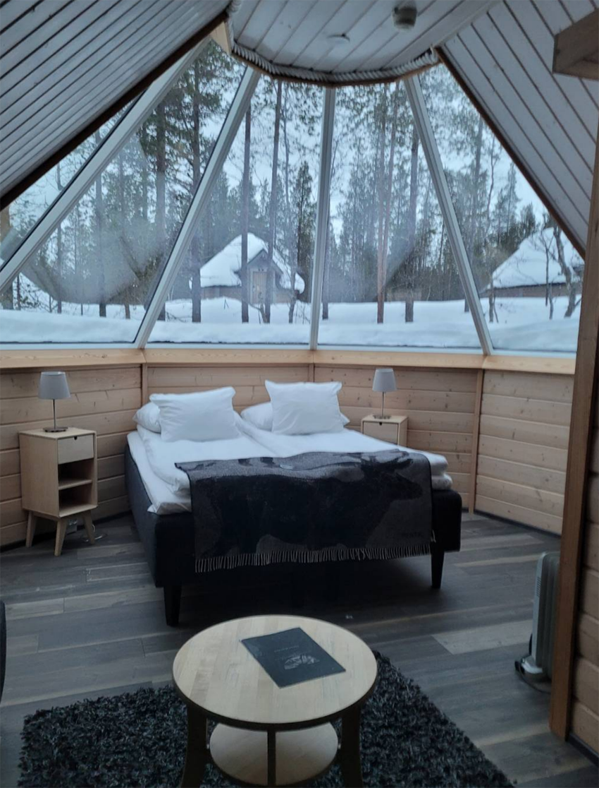 |
晚上住極光屋，可以躺著看天空，可惜這幾天都在下雪，不然就是雲層很厚，就算極光就在頭頂上，有高機率出現也什麼都看不到。
| 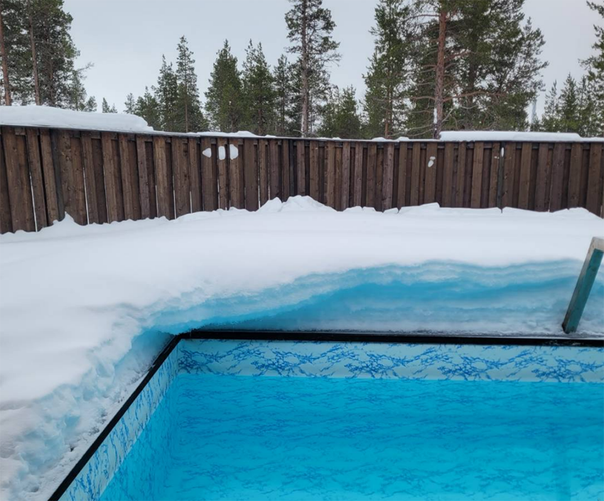 |
桑拿小屋，桑拿室外是一池冰水池外圈還有一層厚厚的雪，大家挑戰桑拿完後下冰水池，每個人都成功下水，大概都是為了拍張美美的照片。
| 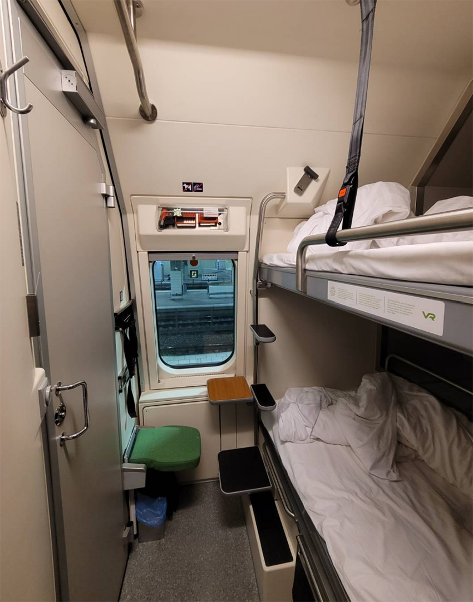 |
晚上行程搭乘聖誕老公公列車，從芬蘭最北一路到芬蘭最南，搭了13小時，夜臥火車雖然床很小廁所也很小，還剛好車廂廁所沒有水，但體驗蠻有趣的，廁所是可以整面水槽翻開變淋浴間，不待房間也可以到火車上的餐廳坐一下，點個東西吃。
最後在芬蘭市區走走、逛逛教堂，隨身行李還是要多注意，雖然導遊一再宣導，還是有人沒注意被偷走了錢包裡的錢。有興趣可以來一趟北歐旅遊體驗，但如果是為了極光，建議到冰島，可以看到的機會比較高喔！